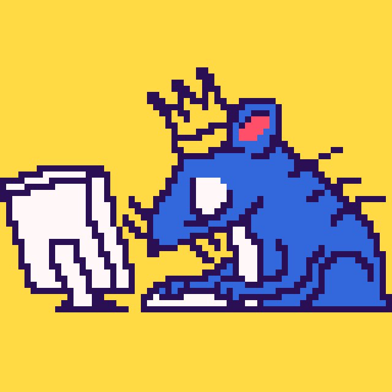

I don't have too much to say, but I like to make games and I dabble with some music.

I got started with game dev by making Portal 2 community maps before I could even code, and eventually got into Godot and to where I am today. Due to these humble beginnings, I have a slight bias towards puzzle games and level design, but I also enjoy working on systems and programming in general.
I also do some music production as well. At the time of writing this, I've made all of the soundtracks for our games. Although it's not my main focus, I always give it my best shot.
Again, I don't have too much to say, but if you want to know more about me, you can check out my itch or github linked above. I hope you enjoy our games.
 itch
itch